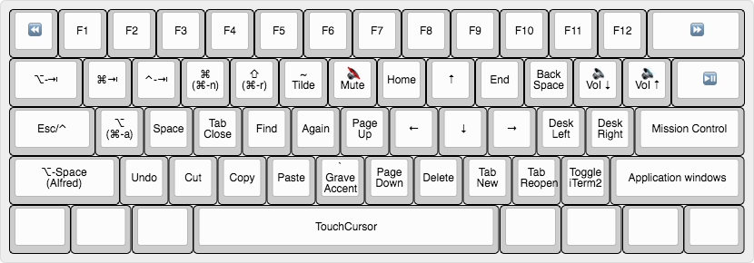

These rules are to accommodate a 60% keyboard, and to minimize (or eliminate) curling thumbs and pinkies for the modifier keys.
TouchCursor Extended Mode [Space as Trigger Key]
(use with Change caps_lock to control if pressed with other keys, to escape if pressed alone.)

- Most default TouchCursor bindings (minus "y" to "Insert",) plus:
- Space-left_shift to ⌥-spacebar (Alfred)
- Space-{a,e,r} to {⌥-any,⌘-any,⇧-any}
- Space-a to ⌘-a, if alone
- Space-e to ⌘-n, if alone
- Space-r to ⌘-r, if alone
- Space-{⇥,q,w} to {⌥-⇥,⌘-⇥,⌃-⇥} [shift modifier allowed]
- Space-{b,t,s} to {`,~,spacebar}
- Space-{d,f,g,comma,period} to {⌘-w,⌘-f,⌘-g,⌘-t,⌘-⇧-t}
- Space-{z,x,c,v} to {⌘-z,⌘-x,⌘-c,⌘-v}
- Space-{1-0,-,=} to {F1-F10,F11,F12}
- Misc Personalizations
- Space-; to ⌘-⌃-; [custom shortcut to: Move left a space]
- Space-' to ⌘-⌃-' [custom shortcut to: Move right a space]
- Space-/ to shell_command [custom script to: Toggle iTerm maximized]
- Space-right_shift to ⌘-⌃-/ [custom shortcut to: Application windows]
- Space-↩ to mission_control
- Media keys
- Space-⎋ and Space-` to rewind
- Space-⌫ to fastforward
- Space-y to mute
- Space-[ to volume_decrement
- Space-] to volume_increment
- Space-\ to play_or_pause
Tab Modifier Mode [Tab as Trigger Key]
-
Hyper:
⌘⇧⌥⌃-[x]
- Mostly map Tab-[x] to corresponding Hyper-[x], primarily used for Hammerspoon, or other apps
-
Conditional exceptions from above Hyper mappings:
- Tab-r to ⌥-⌘-r [Used to "Resume Program" in JetBrains Debugger, Hyper-r otherwise]
MouseCursor Mode [D as Trigger Key]
- press a for "accelerated" (faster) movement
- press f for "fine-grained" (slower) movement
-
Movement
- j: mouse left
- i: mouse up
- k: mouse down
- l: mouse right
-
Scroll
- u: scroll left
- o: scroll right
- h: scroll up
- n: scroll down
-
Left Hand Buttons
- w: left click
- g: left click
- v: middle click
- s: right click
-
Right Hand Buttons
- m: left click
- p: right click
- /: middle click
- ;: button4
- ': button5
Number Row Modifiers
(use with Change caps_lock to control if pressed with other keys, to escape if pressed alone.)
- Number row to ⌘ and ⌥
- Tap for
{4,5,6,7,8}, hold for ⌘
- Tap for
{1,2,3,0,-,=}, hold for ⌥
Home Row Modifiers
(use with Change caps_lock to control if pressed with other keys, to escape if pressed alone.)
- Right Hand Pinky ⌘ and ⌥
- Tap for
;, hold for ⌘
- Tap for
', hold for ⌥